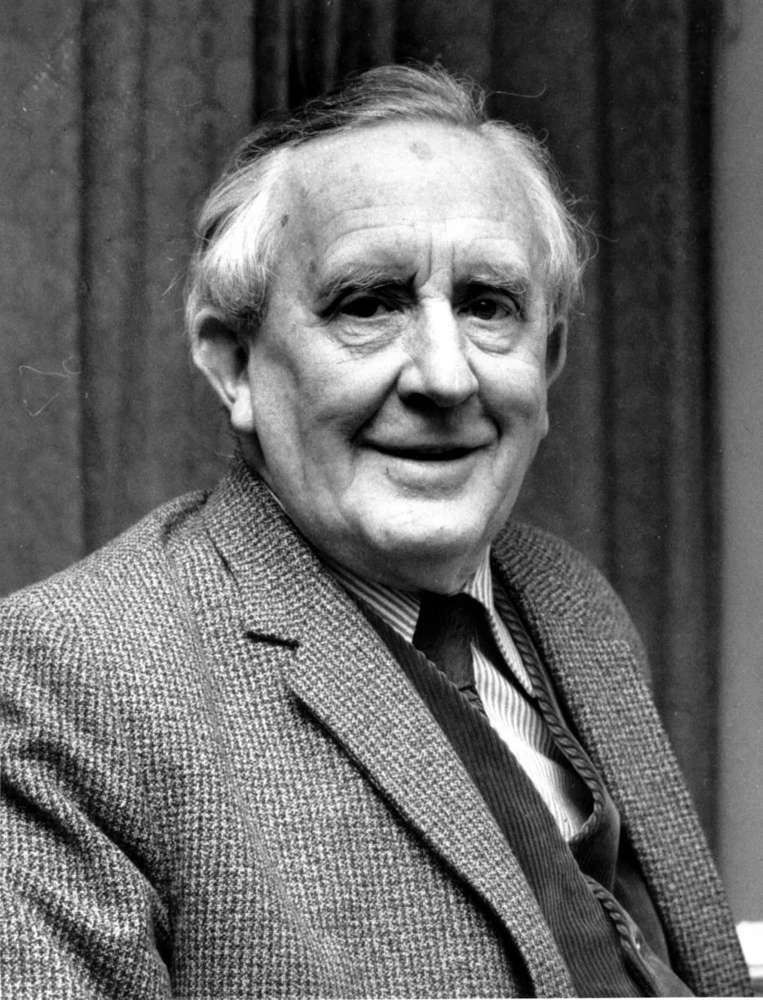

|  |
Автор, Дж.Р.Р.Толкин, профессор Оксфордского университета, специалист по древнему и средневековому английскому языку, создал удивительный мир - Средиземье, который вот уже без малого пятьдесят лет неодолимо влечет к себе миллионы читателей. |
Пиппин выглянул из-под плаща Гэндальфа. Он никак не мог понять, во сне или наяву свистит в ушах черный ночной ветер, медленно плывет зубчатая тень гор далеко справа, во сне или наяву качается у него над головой звездное небо. Он пытался вспомнить, что с ним и где он, но мысли путались, отдельные картины сменяли друг друга.
Яркий желтый огонь в темном небе заставил Пиппина съежиться от страха. Зачем Гэндальф везет его в это страшное, там, впереди? Он протер глаза. На востоке всходила луна. Значит, они будут скакать и скакать, мчаться сквозь ночь бесконечно долго.
Когда стих топот копыт Сполоха, уносящего Гэндальфа и Пиппина, Мерри вернулся к Арагорну.
До сих пор от меня было немного толку, но я все-таки не какая-нибудь безделушка. Всадникам не до меня, хотя их Правитель и обещал, что мы поговорим с ним о Шире после возвращения.
Мерри с изумлением озирался по сторонам. Ему было интересно в незнакомой стране. Это был край без неба; в туманной дымке глаз различал только горы, каменная стена вставала за стеной, меж ними разверзались пропасти, заполненные туманом. От могучих водопадов воздух тихо звенел, шумели деревья, стучали по камням копыта. Раньше Мерри любил слушать о горах, думать о них, но теперь, когда горные хребты вздымались вокруг под самые небеса, он чувствовал себя неуютно, живо ощущая исполинскую тяжесть, гнетущую грудь Средиземья. Слишком они были большие; глядя на них, хотелось оказаться в маленькой комнатке возле камина.